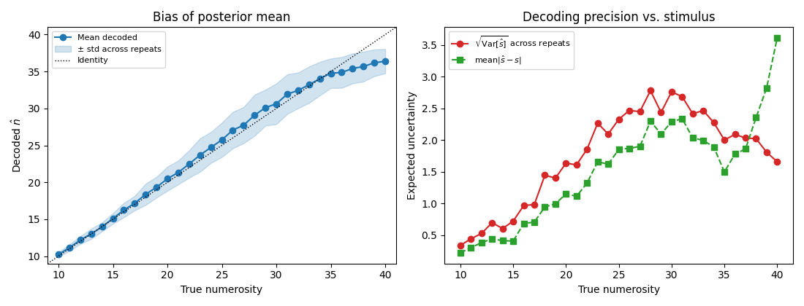

Note
Go to the end to download the full example code.
Expected decoding uncertainty via simulate + decode¶
Fisher information gives a local lower bound on the variance of any unbiased estimator of a stimulus from a fitted encoding model. It’s quick to compute and useful as a theoretical bound, but it ignores two things you usually care about in practice:
the actual prior / stimulus distribution you’ll evaluate on,
the bias of the maximum-a-posteriori or posterior-mean estimator (which Fisher info, being a Cramér–Rao bound, says nothing about).
A more direct alternative is to simulate from the fitted model and re-decode the simulated responses through the same model. The distribution of the posterior-mean estimate across many simulated trials at each stimulus value tells you:
the bias \(E[\hat{s}] - s\), and
the expected uncertainty \(\sqrt{\mathrm{Var}[\hat{s}]}\),
both as functions of the stimulus. This is the procedure used in
neural_priors/encoding_model/get_expected_uncertainty.py; the
example below ports it to public braincoder APIs on the bundled
demo dataset.
import matplotlib.pyplot as plt
import numpy as np
import pandas as pd
from braincoder.models import LogGaussianPRF
from braincoder.optimize import ParameterFitter, ResidualFitter
from braincoder.utils.data import load_pratcarrabin2025_npc
from braincoder.utils.stats import (
fit_r2_mixture,
get_rsq,
)
Load the demo + select voxels¶
Same voxel-selection step as the first two examples — kept self-contained.
bundle = load_pratcarrabin2025_npc()
r2 = bundle['r2']
paradigm_all = bundle['paradigm']
data_all = bundle['data']
r2_wb = bundle['r2_wholebrain'].get_fdata()
mask_wb = bundle['brain_mask'].get_fdata().astype(bool)
fit = fit_r2_mixture(r2_wb[mask_wb])
# Noise μ + 2σ on the logit scale — see example 1 for the rationale.
threshold = 1.0 / (1.0 + np.exp(-(fit['noise_mu'] + 2 * fit['noise_sigma'])))
keep = r2.index[r2 > threshold]
print(f'Kept {len(keep)} voxels (within-sample R² ≥ {threshold:.3f})')
# Restrict to wide-range trials and z-score within the selected voxel set.
is_wide = paradigm_all['range'].values == 'wide'
paradigm = paradigm_all.loc[is_wide].reset_index(drop=True)
data = data_all.loc[is_wide, keep].reset_index(drop=True).astype(np.float32)
data = (data - data.mean(axis=0)) / data.std(axis=0).replace(0, 1)
print(f'Data: {data.shape} (trials × voxels)')
Kept 294 voxels (within-sample R² ≥ 0.041)
Data: (240, 294) (trials × voxels)
Fit the encoding model on all trials¶
For an uncertainty estimate we want the model’s best guess at the
true tuning curves — no held-out trials. The expected-uncertainty
calculation only needs parameters and the noise model.
model = LogGaussianPRF(parameterisation='mu_sd_natural')
fitter = ParameterFitter(model, data, paradigm[['n']])
mu_grid = np.linspace(10, 40, 16, dtype=np.float32)
sd_grid = np.array([5., 10., 20.], dtype=np.float32)
amp_grid = np.array([0.5, 1.0, 2.0], dtype=np.float32)
base_grid = np.array([0.0], dtype=np.float32)
init = fitter.fit_grid(mu_grid, sd_grid, amp_grid, base_grid)
pars = fitter.fit(max_n_iterations=600, init_pars=init,
noise_model='gaussian', learning_rate=0.05,
progressbar=False)
predictions = model.predict(paradigm=paradigm[['n']], parameters=pars)
predictions.index = data.index
train_r2 = get_rsq(data, predictions)
print(f'Train R² — median {np.nanmedian(train_r2):.3f}, '
f'p90 {np.nanpercentile(train_r2, 90):.3f}')
0%| | 0/1 [00:00<?, ?it/s]
100%|██████████| 1/1 [00:00<00:00, 14.08it/s]
Train R² — median 0.079, p90 0.154
Fit the noise model¶
We use a spherical Student-t noise model here — each voxel gets its own variance (τ²) but voxels are treated as independent (the off-diagonal ρ·ττᵀ and σ²·WWᵀ terms are dropped). With a small ROI like NPCr (≲ a few hundred voxels) and modestly noisy single-trial betas, the full structured Ω can tie voxels together so strongly that the decoder collapses toward the population-mean preferred numerosity, hiding the encoding model’s real informativeness. Spherical noise gives a cleaner read on how well the tuning curves alone can support stimulus decoding. See notebook 2 for the trade-off in the other direction (structured Ω with geodesic regularisation when you need cross-voxel correlations).
init_pseudoWWT is still called: even though the spherical
variant doesn’t use WWᵀ in the loss, the underlying model API
requires it to be initialised before any decoding call.
stim_grid = pd.DataFrame({'n': np.arange(10, 41, 1, dtype=np.float32)})
stim_grid.index.name = 'stimulus'
model.init_pseudoWWT(stim_grid, pars)
resid_fitter = ResidualFitter(model, data, paradigm[['n']], parameters=pars)
omega, dof = resid_fitter.fit(method='t', spherical=True, init_dof=10.0,
max_n_iterations=600, progressbar=False)
print(f'Fitted dof: {dof:.1f}')
init_tau: 0.884789764881134, 0.9915053248405457
Fitted dof: 5.0
Simulate, decode, and aggregate in one call¶
EncodingModel.get_expected_uncertainty() wraps the whole
pipeline — for every stimulus in stim_grid it (1) simulates
n_simulations noise-perturbed response vectors from
(parameters, omega, dof), (2) decodes each via
get_stimulus_pdf(), (3) computes the posterior mean, and (4)
aggregates per true stimulus. It returns a DataFrame with
mean_E, var_E, mean_error, mean_abs_error, n_sims.
n_repeats = 200
print(f'Simulating {n_repeats} trials per numerosity '
f'({len(stim_grid)} numerosities) …')
summary = model.get_expected_uncertainty(
stim_grid['n'].values.astype(np.float32),
omega=omega, dof=dof, parameters=pars,
n_simulations=n_repeats, progress=True,
)
# Add convenience columns the plot below reads off directly.
summary['std_decoded'] = np.sqrt(summary['var_E'])
print(summary.round(3).head())
Simulating 200 trials per numerosity (31 numerosities) …
[stim 0:31/31] 6200 simulated trials
mean_E var_E mean_error mean_abs_error n_sims std_decoded
value
10.0 10.220 0.113 0.220 0.220 200 0.337
11.0 11.155 0.194 0.155 0.303 200 0.441
12.0 12.183 0.276 0.183 0.379 200 0.526
13.0 13.024 0.482 0.024 0.441 200 0.694
14.0 13.968 0.364 -0.032 0.412 200 0.604
Plot bias + expected uncertainty¶
Per true numerosity: the bias of the posterior-mean estimator
(mean_E - true) and the spread of the posterior mean across
repeats (√var_E).
fig, axes = plt.subplots(1, 2, figsize=(11, 4.2))
ax = axes[0]
ax.plot(summary.index, summary['mean_E'], 'o-', color='#1f77b4',
label='Mean decoded')
ax.fill_between(summary.index,
summary['mean_E'] - summary['std_decoded'],
summary['mean_E'] + summary['std_decoded'],
color='#1f77b4', alpha=0.2,
label='± std across repeats')
lim = (summary.index.min() - 1, summary.index.max() + 1)
ax.plot(lim, lim, 'k:', lw=1, label='Identity')
ax.set_xlim(lim); ax.set_ylim(lim)
ax.set_xlabel('True numerosity')
ax.set_ylabel(r'Decoded $\hat{n}$')
ax.set_title('Bias of posterior mean')
ax.legend(fontsize=8)
ax = axes[1]
ax.plot(summary.index, summary['std_decoded'], 'o-', color='#d62728',
label=r'$\sqrt{\mathrm{Var}[\hat{s}]}$ across repeats')
ax.plot(summary.index, summary['mean_abs_error'], 's--', color='#2ca02c',
label=r'$\mathrm{mean}|\hat{s} - s|$')
ax.set_xlabel('True numerosity')
ax.set_ylabel('Expected uncertainty')
ax.set_title('Decoding precision vs. stimulus')
ax.legend(fontsize=8)
fig.tight_layout()
plt.show()

Interpretation¶
With the spherical noise model the two curves recover the textbook signatures of a log-Gaussian numerosity code:
The bias curve (left) is essentially flat through the bulk of the stimulus range, with the identity line falling inside the ± std band. A small negative bias appears near the upper edge (n ≳ 35), where the encoding model is sparsely sampled — relatively few voxels have preferred numerosities there, so decoding regresses gently toward the bulk of the population.
The expected uncertainty curve (right) grows monotonically with stimulus magnitude through most of the range. That’s the Weber-law fingerprint: a log-Gaussian population code has wider tuning curves at larger n, so any unit of neural noise translates into a larger uncertainty interval on n. The curve dips again at the very upper edge for the same reason as the bias — fewer voxels supporting that region.
The blue solid curve (\(\sqrt{\mathrm{Var}[\hat{s}]}\)) and the green dashed curve (\(\mathrm{mean}|\hat{s} - s|\)) lie nearly on top of each other through the middle of the range, confirming the decoder is near-unbiased. They separate at the upper edge where the bias appears — mean absolute error picks up bias, the SD across repeats doesn’t.
Why spherical? A full Ω fit on this ROI ties voxels together through ρ·ττᵀ and σ²·WWᵀ; with only a few hundred voxels and modest single-trial SNR, that coupling causes the decoder to collapse toward the population-mean preferred numerosity, hiding the encoding model’s real informativeness. Spherical noise is the right default when you want to read out the encoder itself; structured Ω (e.g. with the geodesic regularisation from notebook 2) is the right default when you want a decoder that reflects the actual noise structure of the brain.
Under the Cramér–Rao bound the variance of an unbiased estimator is at least \(1 / \mathcal{I}(s)\), so where the estimator is roughly unbiased here, \(\mathrm{Var}[\hat{s}] \approx 1 /\) Fisher information.
EncodingModel.get_expected_uncertainty()andEncodingModel.get_fisher_information()are the two ends of that bound — see Fisher information and expected uncertainty for the head-to-head.Cost: simulate + decode \(\sim 10^3\)–\(10^4\) trials per stimulus; use
batch_stimuli=to bound memory for large grids.
Total running time of the script: (0 minutes 29.618 seconds)